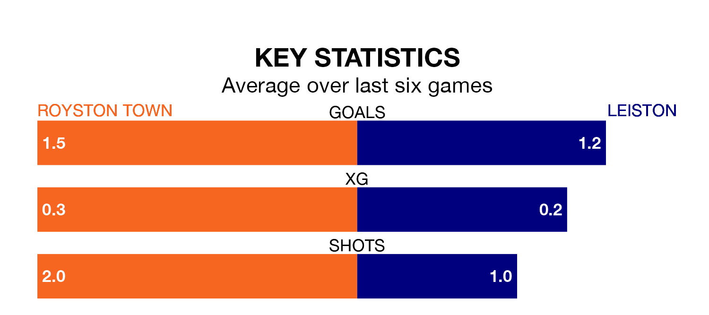

Royston Town host Leiston on Monday at the Garden Walk Stadium in the Southern League Premier Central.
In their last league match, on Saturday, Royston beat Stamford 2-1 away.
Leiston also won, 3-1 at home against Berkhamsted.
In the last 10 years, Royston and Leiston have played each other on eight occasions. Royston won one of them, Leiston three, and they drew four times.
On average, Royston scored 1.1 goals and Leiston 1.9 in those matches.
Their last meeting was on January 1, when Royston won 3-2 away.
With 52 goals in 36 games so far this season, Royston are scoring at below the league average rate with 1.4 goals per game. And they are conceding at an average rate, letting in 53 goals at a rate of 1.5 per game.
Leiston, meanwhile, are average scorers, with 1.5 goals per game. They have conceded 1.6 goals per game.
Town are in mixed form in the Southern League Premier Central, with three wins and three losses from their last six games.
With two wins and a draw over that period, the visitors' form is slightly worse – they have taken seven points from 18, compared to the home team's nine.
Royston are ninth in the table after 36 games, of which they have won 15 and drawn six, earning 51 points.
Leiston are one place behind Royston in 10th, with 14 wins and eight draws putting them on 50 points.
Updated: 10:31 (UTC), 31/03/24